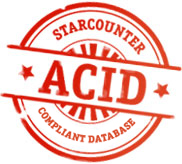

 Try the Starcounter 2.0 public beta The world's fastest consistent database A code-first approach: write less, achieve more No O/R mapping needed Give your server the power of a large data center Learn about Starcounter in 30 seconds
The Blog If you have a successful application and it relies upon persistent data then data storage will become your bottleneck. Peter Idestam-Almquist, PhD Continue Reading
3,000,000 transactions per second on a standard server Today the world's largest online stores depend on enormous server infrastructures. With Starcounter, a single server could be enough.
Technology comes before revolution Our founder, Joachim Wester, is old enough to remember when Bill Gates dreamed about "a computer on every desk and in every home". Now he invites you to join the next revolution.
Starcounter in 30 seconds The elevator pitch "It's totally faster than OldSQL, dude" But does it keep your data consistent? In contrast to NoSQL, which only gives you relative / eventual / local consistency, Starcounter guarantees absolute / immediate / global consistency. "No version for dummies, please" Starcounter is a memory centric, ACID compliant, transactional database, optimized for modern CPUs. It is reliable since transactions are secured on disk, and it supports replication and full checkpoint recovery. Starcounter is super fast, because of a new invention: VMDBMS, which integrates the runtime virtual machine (VM) and the DBMS. Starcounter is super easy to use from your application because of its native .NET object API and SQL query support.